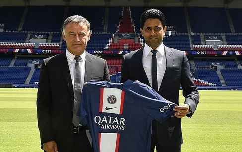

PSG Resmi Tunjuk Christophe Galtier sebagai Pelatih Baru

PARIS - Setelah memecat Mauricio Pochettino, Paris Saint-Germain (PSG) tak lama langsung mengumumkan bahwa Christophe Galtier resmi menjadi pelatih baru untuk Les Parisiens. PSG bahkan langsung memberikan kontra Galtier selama dua musim ke depan atau hingga akhir Juni 2024. PSG mengumumkan kabar bahagia itu secara resmi di laman resmi klub. Les Parisiens lantas dengan senang hati menyambut pelatih asal Prancis tersebut. "Paris Saint-Germain dengan senang hati mengumumkan bahwa Christophe Galtier telah ditunjuk sebagai pelatih kepala tim utama. Pria asal Prancis itu telah menandatangani kontrak selama dua musim hingga 30 Juni 2024," bunyi pernyataan PSG di laman resminya, Selasa (5/7/2022).Seperti diketahui, Galtier yang merupakan mantan bek itu telah menjadi salah satu pelatih paling terkenal dan berpengalaman di sepak bola Prancis. Setelah karir sebagai pemainnya berakhir, Galtier memulai karir kepelatihan yang sukses. Pertama, ia meengawalinya sebagai asisten. Kemudian, ia menjadi pelatih kepala Saint-Étienne (2009-2017), sebelum bergabung dengan Lille (2017-2021) dan kemudian Nice (2021-2022).
Copyright © 2022. All Rights Reserved.